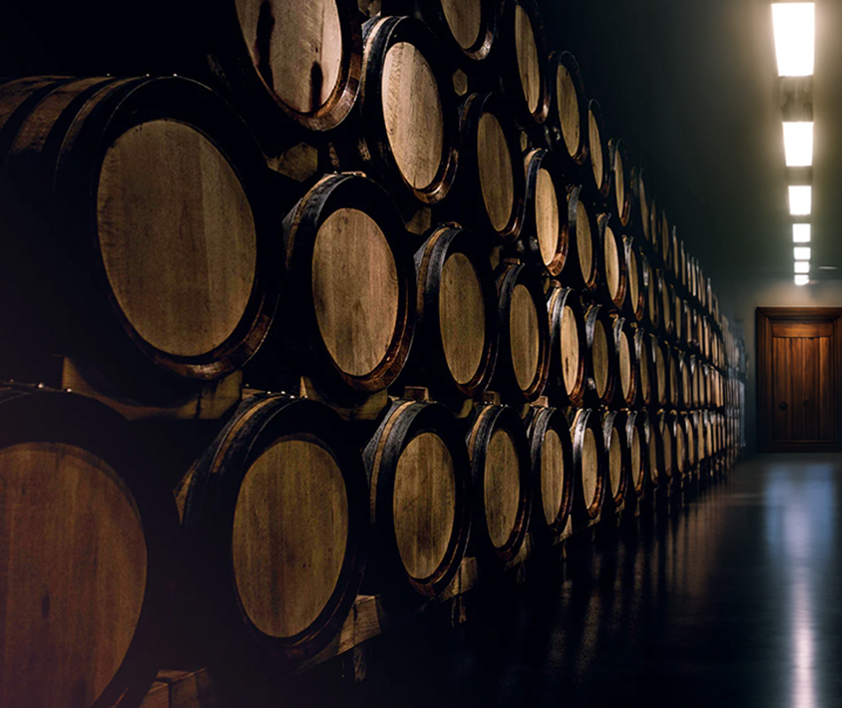

MISTERIOSO, ENIGMÁTICO E INSPIRADOR.
Palmira encontra sua fonte de inspiração nos enigmas do Vale do Maule, e é por isso que sua personalidade é profundamente permeada por elementos mágicos, mistérios, lendas, o desconhecido e fantasias, todos alimentados pela curiosidade inerente ao desejo de descobrir.
Palmira é um membro do Grupo Donoso, um conjunto de vinícolas premium localizadas no Vale do Maule, em Talca. A vinificação e o envase ocorrem nas instalações do próprio Grupo Donoso, situadas na mesma cidade. Isso nos permite afirmar que os produtos são "engarrafados no estado" ou "envasados na origem", assegurando, portanto, que são 100% provenientes do Vale do Maule.
